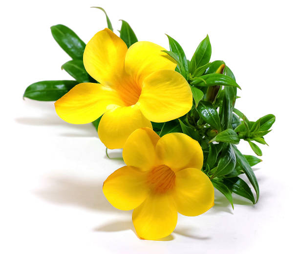

Yellow Bells (Tecoma stans)
Scientific Name: Tecoma stans
Description: Yellow Bells, also known as Tecoma stans, is a flowering plant native to the American southwest and the Caribbean. It is known for its bright yellow, bell-shaped flowers that bloom in clusters. The plant is commonly used in landscaping due to its vibrant flowers and its ability to attract pollinators like bees and hummingbirds.
Care Tips:
- Water: Water regularly, but ensure good drainage. Let the soil dry out between waterings to prevent root rot.
- Light: Prefers full sun. Plant in an area that gets at least 6 hours of direct sunlight each day for the best flowering.
- Temperature: Thrives in warm temperatures and is drought-tolerant once established. Ideal temperature range: 65°F to 90°F (18°C to 32°C).
- Humidity: Tolerates dry conditions and is well-suited for arid climates.
Medicinal Uses:
Yellow Bells is known for its medicinal properties in traditional medicine. The plant has been used for treating conditions like fever, diarrhea, and sore throat. In some cultures, the leaves and flowers are boiled to make a decoction, which is believed to have anti-inflammatory, antipyretic (fever-reducing), and antimicrobial properties. Some also use it as a natural remedy for skin infections and as a detoxifier.